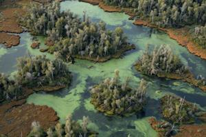
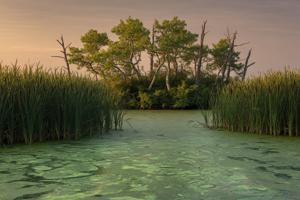
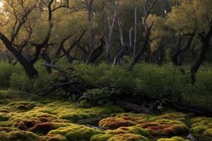
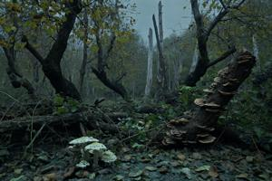
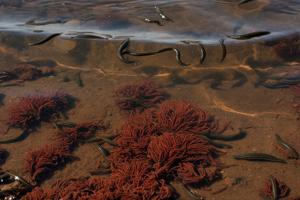
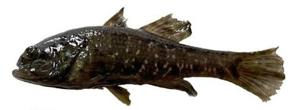
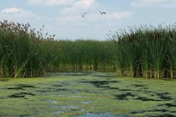
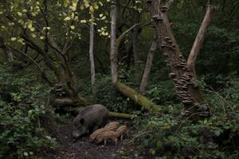
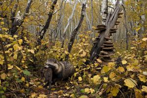
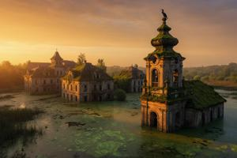

Xljubiscza
{kind=link}

Xljubiscza (Zgurian; Deglian: Xlübiŝa; Glagolitic: ⰢⰎⰣⰁⰊⰛⰀ; pronounciation: [khlju'biʃtʃa]) is a natural region of Former Upper Pannonia: a stretch of the South Drava valley that turned to marsh after the Gowbka hydroelectric dam was built in 1950–1954. The dam raised the river by two metres and created a reservoir, the Pannonian Sea, where the current slows almost to a standstill near the shore. Decades of poorly treated industrial discharge from the Gowbkaslava factories, including heavy metals, hydrocarbons, and assorted acids and alkalis, have severely degraded the Pannonian Sea's ecosystem and its shores.
Geography
Xljubiscza fringes both banks of the Pannonian Sea for roughly 20 km upstream of Gowbkaslava. Where the shore turns hilly, the marsh narrows to a strip of coastal thicket; where it flattens out, it can widen to 5 km. Average width runs about 1.5 km along the right bank and 2 km along the left. Seen from above, Xljubiscza looks like a maze of islands, channels, and open water, laced with broad stretches of moss bog and reed thicket.
The worst of the damage is concentrated on the right bank, within about 5 km of Gowbkaslava — the core of the ecological disaster. Industrial waste settled here directly for decades and, on a smaller scale, still does. Even so, the biological processes described below carry pollutants further upstream, so Xljubiscza's distinctive ecosystem extends well beyond this core zone.
Ecology
Stagnant water, a steady influx of industrial waste, and encroaching marsh have driven dissolved oxygen levels sharply down across the entire Pannonian Sea. Most species typical of Central European rivers, including salmonids and many pollution-sensitive amphibians and insects, have died out. But nature abhors a vacuum: extremophiles and highly adaptable generalists moved in to fill it. The result is a stable ecosystem with poor species diversity — only a handful of species have survived — but, freed from competition, each of them thrives in extraordinary numbers.
Microorganisms
{kind=link}

The reservoir bed is a toxic, oxygen-starved sludge. Turbid water hampers ordinary photosynthesis, so plant life is sparse throughout and all but absent in the core disaster zone near Gowbkaslava.
Anaerobic bacteria thrive throughout the sludge. Sulfur bacteria and methanogens break down industrial sulfates and organic matter, releasing hydrogen sulfide and methane; the water runs cloudy, and in places the bottom literally bubbles with gas. Most of it escapes into the air, giving off the sewage-like reek that, by the late 1950s, had already earned the Pannonian Sea its enduring nickname, the Stinky Sea (Smrudno Morje).
In summer, a dense, poison-green film of cyanobacteria covers almost the whole surface of the Pannonian Sea outside the main channel. It tolerates pollution well, feeds on phosphates and nitrates from the runoff, and produces its own toxins to ward off grazers. Even in winter, anaerobic reactions in the sludge never fully stop, so the shallows stay a little warmer than normal: the local ice is thin, brittle, and tinged yellow-green, pocked with open leads that steam with a foul-smelling vapor.
Plants
{kind=link}

Dense walls of reed and cattail cover the banks and shallows. Both plants tolerate the chemical runoff and act as natural filters, accumulating heavy metals such as zinc, lead, and copper in their roots and stems. Duckweed fills the open water between the stands.
Along the boundary between land and water, pollution-tolerant mosses thrive, especially where the runoff turns acidic. Sphagnum has taken over the boggy lowlands along the islands' shores, releasing its own acids and making the soil even more hostile to ordinary plants; its thick, springy cushions often hide quicksand-like traps underneath.
Capillary action keeps the islands' soil soaked in toxic water, so the roots of higher plants have to fight not only the poisons but also a chronic lack of oxygen in the waterlogged ground. Only the hardiest tree species have survived these conditions: grey willow, alder, aspen, and black poplar. Beneath their canopy, blackberry, buckthorn, and black elder cling to fallen trunks and form impenetrable thickets.
A poisoned, oxygen-free layer deep in the soil keeps the trees from rooting deeply. That leaves them short, rarely above 3 m, and short-lived: once a young tree's roots reach the point where the groundwater turns too toxic, it dies and stands there as a bare grey skeleton. Poorly anchored, the trees also topple easily in strong wind, leaving windfalls and tangles of dead trunks behind.
Constant exposure to mutagens and heavy metals warps the trunks, so the trees grow crooked and knotted, covered in burls, with unnaturally small leaves. Come autumn they shed those leaves — but since the leaves have spent the summer soaking up heavy metals from the soil, the leaf fall just returns the toxins to the ground, building up a stable layer of poisoned humus where most grasses cannot grow.
Fungi
{kind=link}

Fungi thrive here: their mycelium tolerates toxins well and can break down complex chemical compounds, including petroleum products.
Bracket fungi, which feed on wood, are especially common. Trees die from groundwater poisoning so often that the islands are littered with windfall, giving bracket fungi an ideal food source; dead trunks end up studded with tiered, woody shelves as the fungi work their way through the timber.
Moulds dominate the damp soil, which stays warm from its own decay. They coat fallen leaves in an unbroken blue-green film that speeds up decomposition.
Cap mushrooms are common, and often lethally poisonous even in species that are normally edible elsewhere. Mushrooms act as natural sponges, and any birch bolete or russula growing in the core pollution zone soaks up practically the whole periodic table from the soil. Toward the periphery, mushrooms can be safe to eat — but the line between safe and deadly is blurred, non-linear, shifting, and unmapped.
Invertebrates
{kind=link}

Oxygen scarcity keeps the usual crustaceans and molluscs off the bottom. Its main inhabitants instead are sludge worms (Tubifex tubifex), segmented worms that in places form unbroken carpets of pulsing red over the toxic silt. A specialized hemoglobin in their blood lets them breathe at near-zero oxygen levels while they feed on the contaminated sludge, passing its heavy metals through their bodies.
Mosquito larvae do well near the surface, filling the air over Xljubiscza with a constant hum all summer long. Backswimmers, diving beetles, and water scorpions breathe atmospheric air, so water quality troubles them less, and they hunt the larvae and each other. Some snails, such as pond snails (Lymnaeidae), can likewise breathe air and crawl over the surface reed beds, feeding on rotting vegetation and duckweed.
Leeches thrive throughout the water column, tolerating heavy silting, low oxygen, and high concentrations of organic pollutants — among them the large horse leech (Haemopis sanguisuga) and various snail leeches. They breathe through their entire skin, and an extremely slow metabolism helps them conserve energy under such harsh conditions. When the pollution-sensitive water insects and fish died off, leeches simply moved into the niches they left behind.
The vast colonies of sludge worms on the bottom and the air-breathing snails on the reeds feed the predatory leeches. Toward the less polluted edges, blood-feeding leeches that parasitize fish and other vertebrates grow abundant enough that the shallows are, quite literally, crawling with them.
Fish and amphibians
{kind=link}

Fish species diversity is extremely poor, but numbers and biomass are enormous. The Amur sleeper (Perccottus glenii), an aggressive invasive predator, called "hellfish" in Pannonian (pjekelna ryba or simply pjeklja) for its blackness and uglyness, monopolizes the Pannonian Sea and Xljubiscza's channels and backwaters. It tolerates heavy pollution and eats anything that moves — sludge worms, leeches, snails, insect larvae, frogs, even the fry of its own species. Using Xljubiscza as a beachhead, it has all but eliminated every other fish, not only from the Pannonian Sea but from the surrounding waters as well, and by now dominates the entire South Drava basin, including stretches untouched by pollution.
Amphibians, generally sensitive to pollution, struggle here. Marsh frogs have adapted reasonably well, though the mutagenic waste has left a high share of the population with morphological defects such as extra limbs or missing eyes.
Reptiles and birds
{kind=link}

At the top of the ecosystem are animals that don't live in the water permanently but feed in it, which exposes them to biomagnification: toxin concentrations that rise exponentially at each step up the food chain. Every one of them is physiologically compromised, prone to every kind of deformity, with shorter lifespans and lower fertility than their counterparts in clean environments. Even so, the hardiest individuals reach maturity and reproduce, enough to sustain stable populations.
Fish-eating snakes such as the dice snake can't survive in Xljubiscza; the local fish are too toxic. The grass snake fares somewhat better, feeding instead on frogs and small rodents, which absorb far fewer poisons than fish do. Lung-breathing and armored in scales that form a reliable barrier against the water's chemicals, it maintains colonies along the islands' shores in Xljubiscza's peripheral, less contaminated zone, helped along by a relatively fast generational turnover.
Black-headed gulls, hooded crows, and fish-eating cormorants also nest in the peripheral zone, though heavy metal accumulation shortens their lifespans and thins their eggshells.
Fish-eating mammals such as otters and mink can't tolerate the fish's toxicity either. Ironically, that same toxicity shields the Amur sleeper from predators and lets it breed almost unchecked in the most contaminated part of Xljubiscza, where essentially only leeches and adult sleepers prey on the fry.
Mammals
Among small mammals, brown rats are common, along with muskrats, which build their lodges out of poisoned reed and feed on plant rhizomes, accumulating the chemicals in them.
Large herbivores also live on the islands and in the shallows, but they suffer from specific contaminants: cadmium and lead, both of which build up in plants. Willow and aspen draw heavy metals out of the soil especially well, and their bark happens to be the beaver's favorite food. A steady diet of "metallized" bark gives beavers chronic cadmium poisoning — cadmium displaces calcium in the body, and the beaver's famous orange incisors, normally coated in tough, iron-rich enamel, turn brittle and crumble. Beavers develop osteoporosis, and their bones break when trees fall on them. Still, thanks to rapid breeding and lodge-building, which floods the wetlands even further, beavers have managed to hold on, even though their average lifespan has dropped two- to threefold.
Moose and roe deer wade into the marshes to feed on calorie-rich cattail and water lilies. In males of both species, cadmium buildup leaves the antlers grotesquely asymmetrical or spongy, prone to snapping while still growing, and weakened bones mean the animals often drown after getting stuck in the toxic silt.
The only large animals that haven't merely survived but have come to dominate the zone are ecological opportunists with unusually high physiological resilience: wild boar and raccoon dogs.
{kind=link}

Wild boar root through the toxic silt along the banks with their snouts, eating sludge worms, dead fish, cattail roots, and bird eggs. The boar is one of the most fertile large mammals — a sow can produce 6–8 piglets by the time she's a year old — and by age 3–4, though the animals develop every kind of tumor, ulcer, and cirrhosis, a single sow has typically already left behind some twenty descendants. Churning up the marsh as they dig, boar are the main vector carrying toxins onto dry land.
{kind=link}

Raccoon dogs favor waterlogged woodland and don't turn up their noses at carrion. In Xljubiscza they've taken over the ecological niche of foxes, which are more sensitive to the poisons, hunting small rodents and scavenging dead fish, dead birds, and frogs. They fall ill and lose fur to chemical dermatitis, but their adaptability keeps them established as permanent residents of the undergrowth.
High doses of mercury compounds ravage the mammals' nervous systems: they often go blind, lose coordination, or behave as though rabid, dashing about erratically, losing their fear of humans, turning aggressive. Xljubiscza's wild boar and raccoon dogs are notorious for unprovoked attacks on people, including on the zone's periphery and, occasionally, within the city limits of Gowbkaslava.
Xljubiscza and humans
The scale of the ecological disaster in the flood zone was already apparent by the late 1950s. In the 1960s, the Communist authorities tried a prison-labor "reclamation" project, but it achieved next to nothing and bred resentment in the security services, whose officers had to serve tours in Xljubiscza. What remains of it is the abandoned Czistovodny ("Clean Water") labor camp, 4 km upstream of Gowbkaslava, its guard towers and barracks now overgrown with moss and creepers.
{kind=link}

Many settlements fell within the flood zone when the dam was built. Some vanished completely under the water, among them the historic town of Bregovo. Others were only partly submerged, including the old town of Czigra on the south bank, 11 km upstream of Gowbkaslava, whose moss-covered ruins still rise above the marsh today. These ghost settlements are wrapped in legends about the "Czigraks" — locals said to have stayed behind in their homes after the flooding and turned into mutants or swamp spirits.
Access to Xljubiscza is officially closed. Both the Zgurian and Deglian authorities admit only scientists and licensed rangers culling the boar and raccoon dog population. Commercial hunting, fishing, and berry- or mushroom-picking are all criminal offenses. In practice, though, enforcement is lax and poaching persists. Eating game or fish from Xljubiscza is widely called a "lottery": you might get something lethally poisonous or something comparatively clean — and the latter actually comes up more often.
Local fish and boar have brittle bones, which makes them cheap and easy to grind into more or less edible mince. Given lax sanitary oversight, this product regularly turns up on store shelves, where its low price keeps it in demand. The "mince mafias" of Gowbkaslava and Vronovica control the entire chain from poaching to sale, greasing corrupt arrangements with the regulatory bodies at every stage.
A mild form of punishment took hold in Former Upper Pannonia's criminal underworld as far back as the socialist era: take someone out by motorboat at night and put them ashore in Xljubiscza, usually stripped naked. Still widely practiced today and known as "to xljub" (xljubovaty), it doesn't usually end in death — though a walk of several kilometers through the zone described above is hardly a pleasant outing.